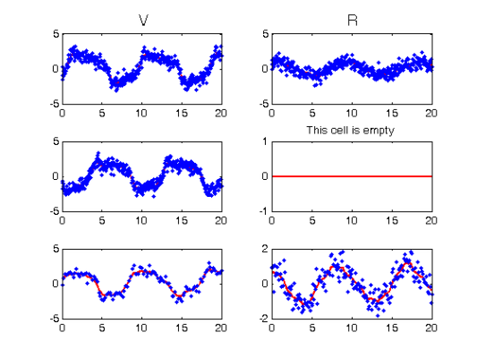
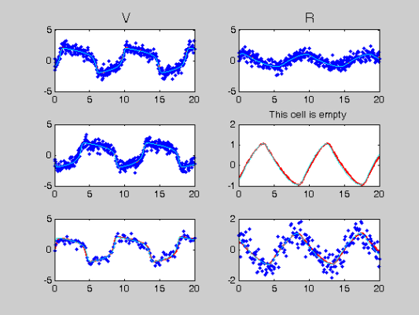
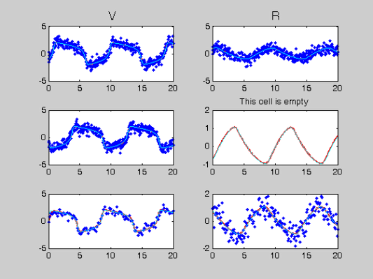
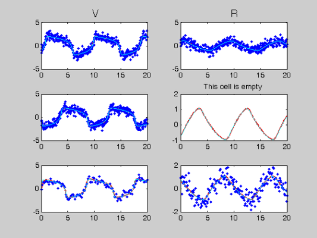

Profile Estimation Experiments - Replicated Experiments
The following file demonstrates the application of the profiling code to repeated time series. It is largely formatted in the same manner as FhNEx.html and the reader is referred to that file and to the Profile Users Mandual for more detailed commentry. What commentary there is in this file is focussed on the issues involved in replicated experiments.
The use of the FitzHugh-Nagumo equations is continued for the sake of continuity.
There are two main differences to be aware of when using replicated experiments:
- the use of the input parind to allow some parameters to vary accross replications
- the format of the objects containing observations and bases; in these, rows represent replications while columns represent components of the system. In this case, basis functions need to have the same range and quadrature points only within replications.
Contents
- RHS Functions
- Various parameters
- Observation times
- Create trajectories
- Set up observations
- Fitting parameters
- Profiling optimisation control
- Setting up functional data objects
- Smooth the data
- Re-smoothing with model-based penalty
- Perform the Profiled Estimation
- Plot Smooth with Profile-Estimated Parameters
- Comparison with Smooth Using True Parameters
- Squared Error Performance
RHS Functions
odefn = @fhnfunode; % Function for ODE solver (exact) fn.fn = @fhnfun; % RHS function fn.dfdx = @fhndfdx; % Derivative wrt inputs (Jacobian) fn.dfdp = @fhndfdp; % Derviative wrt parameters fn.d2fdx2 = @fhnd2fdx2; % Hessian wrt inputs fn.d2fdxdp = @fhnd2fdxdp; % Hessian wrt inputs and parameters fn.d2fdp2 = @fhnd2fdp2; % Hessian wrt parameters. fn.d3fdx3 = @fhnd3fdx3; % Third derivative wrt inputs. fn.d3fdx2dp = @fhnd3fdx2dp; % Third derivative wrt intputs, inputs and pars. fn.d3fdxdp2 = @fhnd3fdxdp2; % Third derivative wrt inputs, pars and pars.
Various parameters
y0 = [-1, 1; % Initial conditions; rows represent different -1,-0.75; % replications. 1,0.75]; % The first difference in code between profiling and profiling with % repeated time series is that some parameters may be common accross time % series and some may not be. That is, if some parameter is not % common to all replications, all its distict values must be included in % the parameter vector. % % The main additional input into code is an matrix of indeces called % parind. The rows of this matrix should map elements of the parameter % vector to replications of the system. % % In the following example, the last parameter is regarded as varying % accross the three replications with its three values stored in positions % three to five of the parameter vector. % % Note that leaving parind empty defaults to all parameters being common to % all replications. parind = 1:3; % Which parameters hold for which parind = repmat(parind,size(y0,1),1);% replications parind(2:3,3) = [4,5]; disp('Parameter indices:') disp(num2str(parind)) % The rest of the parameters continue as usual, the final parameter is % repeated three times, as specified in parind. pars = [0.2; 0.2; 3; 3; 3]; % Parameters disp('Parameter indices:') disp(num2str(pars')) sigma = 0.5; % Noise Level jitter = 0.2; % Perturbation for initial startpars = pars + jitter*randn(length(pars),1); % parameter estimates disp('Starting parameter values: ') disp(num2str(startpars'))
Parameter indices: 1 2 3 1 2 4 1 2 5 Parameter indices: 0.2 0.2 3 3 3 Starting parameter values: 0.21192 0.047965 2.6618 3.2207 3.2925
Observation times
tspan = 0:0.05:20; % Observation times % Here is the first example of the use of a cell array to describe % replicated experiments obs_pts indicates which of the elemnts of tspan % are observed by which component of which replication (three replications % given by rows, two components given by columns). In this case we have % even left some without obsrevations! obs_pts = {1:401, 1:401; % Which components are observed at 1:401, []; % which observation times. 1:4:401, 1:2:401}; % Rows represent replications. tfine = 0:0.05:20; % Times to plot solutions
Create trajectories
odeopts = odeset('RelTol',1e-13); for i = 1:size(y0,1) [full_time(:,i),full_path(:,:,i)] = ode45(odefn,tspan,y0(i,:),odeopts,pars); [plot_time(:,i),plot_path(:,:,i)] = ode45(odefn,tfine,y0(i,:),odeopts,pars); end
Set up observations
% Once again, the objects tspan, path, noise_path and wts are all cell % arrays with rows representing replications and columns representing % components. Tcell = cell(size(y0)); path = cell(size(y0)); for i = 1:size(obs_pts,1) for j = 1:size(obs_pts,2) Tcell{i,j} = full_time(obs_pts{i,j},i); path{i,j} = full_path(obs_pts{i,j},j,i); end end % add noise Ycell = path; for i = 1:size(path,1) for j = 1:size(path,2) Ycell{i,j} = path{i,j} + sigma*randn(size(path{i,j})); end end % and set wts wts = []; if isempty(wts) % estimate wts if not given wts = ones(size(path)); for i = 1:size(Ycell,1) for j = 1:size(Ycell,2) if ~isempty(Ycell{i,j}) wts(i) = 1./sqrt(var(path{i,j})); end end end end
Fitting parameters
lambda = 1000; % Smoothing for model-based penalty lambda = lambda*wts; lambda0 = 1; % Smoothing for 1st-derivative penalty nknots = 401; % Number of knots to use. nquad = 5; % No. between-knots quadrature points. norder = 3; % Order of B-spline approximation
Profiling optimisation control
lsopts_out = optimset('DerivativeCheck','off','Jacobian','on',... 'Display','iter','MaxIter',1000,'TolFun',1e-8,'TolX',1e-10); % Other observed optimiation control lsopts_other = optimset('DerivativeCheck','off','Jacobian','on',... 'Display','on','MaxIter',1000,'TolFun',1e-14,'TolX',1e-14,... 'JacobMult',@SparseJMfun); % Optimiation control within profiling lsopts_in = optimset('DerivativeCheck','off','Jacobian','on',... 'Display','off','MaxIter',1000,'TolFun',1e-14,'TolX',1e-14,... 'JacobMult',@SparseJMfun);
Setting up functional data objects
Here basis_cell and Lfd_cell must be listed as cell matrices in the same manner as Tcell and Ycell. In this case, we can assign bases from different replications to have different ranges and quadrature points. We therefore index these by their replication number.
% set up knots range = zeros(3,2); % Range of observations knots_cell = cell(size(path)); % Knots for each basis for i = 1:size(path,1) range(i,:) = [min(full_time(:,i)),max(full_time(:,i))]; knots_cell(i,:) = {linspace(range(i,1),range(i,2),nknots)}; end % set up bases basis_cell = cell(size(path)); % Create cell arrays. Lfd_cell = cell(size(path)); nbasis = zeros(size(path)); bigknots = cell(size(path,1),1); % bigknots used for quadrature points bigknots(:) = {[]}; quadvals = bigknots; for i = 1:size(path,1) for j = 1:size(path,2) bigknots{i} = [bigknots{i} knots_cell{i,j}]; nbasis(i,j) = length(knots_cell{i,j}) + norder -2; end quadvals{i} = MakeQuadPoints(bigknots{i},nquad); end for i = 1:size(path,1) % create bases and quadrature points for j = 1:size(path,2) basis_cell{i,j} = MakeBasis(range(i,:),nbasis(i,j),norder,... knots_cell{i,j},quadvals{i},1); Lfd_cell{i,j} = fdPar(basis_cell{i,j},1,lambda0); end end
Smooth the data
DEfd = smoothfd_cell(Ycell,Tcell,Lfd_cell); coefs = getcellcoefs(DEfd); devals = eval_fdcell(tfine,DEfd,0); figure(1) for i = 1:size(path,1) for j = 1:size(path,2) subplot(size(path,1),size(path,2),(i-1)*size(path,2)+j) plot(tfine,devals{i,j},'r','LineWidth',2); hold on; plot(Tcell{i,j},Ycell{i,j},'b.'); hold off; if i==2 && j==2 title('This cell is empty') end if i==1 && j==1 title('\fontsize{13} V') end if i==1 && j==2 title('\fontsize{13} R') end end end
Re-smoothing with model-based penalty
% Call the Gauss-Newton solver [newcoefs,resnorm2] = lsqnonlin(@SplineCoefErr_rep,coefs,[],[],... lsopts_other,basis_cell,Ycell,Tcell,wts,lambda,fn,[],startpars,parind); tDEfd = Make_fdcell(newcoefs,basis_cell); % Plot results along with exact solution devals = eval_fdcell(tfine,tDEfd,0); figure(2) for i = 1:size(path,1) for j = 1:size(path,2) subplot(size(path,1),size(path,2),(i-1)*size(path,2)+j) plot(tfine,devals{i,j},'r','LineWidth',2); hold on; plot(Tcell{i,j},Ycell{i,j},'b.'); plot(plot_time,plot_path(:,j,i),'c'); hold off if i==2 && j==2 title('This cell is empty') end if i==1 && j==1 title('\fontsize{13} V') end if i==1 && j==2 title('\fontsize{13} R') end end end
Optimization terminated: relative function value changing by less than OPTIONS.TolFun.
Perform the Profiled Estimation
[newpars,newDEfd_cell] = Profile_GausNewt_rep(startpars,lsopts_out,parind,... tDEfd,fn,lambda,Ycell,Tcell,wts,[],lsopts_in); disp(['New parameter values: ',num2str(newpars')]);
Iteration steps Residual Improvement Grad-norm parameters
1 1 401.508 0.0272672 0.695 0.19564 0.2182 2.9204 3.0304 2.9926
2 1 401.377 0.000326109 0.0785 0.19214 0.23349 2.9448 2.9805 2.9705
3 1 401.377 1.87757e-006 0.00605 0.1919 0.23414 2.9457 2.9756 2.9697
4 1 401.377 1.56962e-008 0.000511 0.19188 0.23421 2.9458 2.9751 2.9697
5 1 401.377 1.56155e-010 4.07e-005 0.19188 0.23421 2.9458 2.9751 2.9697
New parameter values: 0.19188 0.23421 2.9458 2.9751 2.9697
Plot Smooth with Profile-Estimated Parameters
devals = eval_fdcell(tfine,newDEfd_cell,0); figure(3) for i = 1:size(path,1) for j = 1:size(path,2) subplot(size(path,1),size(path,2),(i-1)*size(path,2)+j) plot(tfine,devals{i,j},'r','LineWidth',2); hold on; plot(Tcell{i,j},Ycell{i,j},'b.'); plot(plot_time,plot_path(:,j,i),'c'); hold off if i==2 && j==2 title('This cell is empty') end if i==1 && j==1 title('\fontsize{13} V') end if i==1 && j==2 title('\fontsize{13} R') end end end
Comparison with Smooth Using True Parameters
coefs = getcellcoefs(DEfd); % Starting coefficient estimate [truecoefs,resnorm4] = lsqnonlin(@SplineCoefErr_rep,coefs,[],[],... lsopts_other,basis_cell,Ycell,Tcell,wts,lambda,fn,[],pars,parind); trueDEfd_cell = Make_fdcell(truecoefs,basis_cell); devals = eval_fdcell(tfine,trueDEfd_cell,0); figure(4) for i = 1:size(path,1) for j = 1:size(path,2) subplot(size(path,1),size(path,2),(i-1)*size(path,2)+j) plot(tfine,devals{i,j},'r','LineWidth',2); hold on; plot(Tcell{i,j},Ycell{i,j},'b.'); plot(plot_time,plot_path(:,j,i),'c'); hold off if i==2 && j==2 title('This cell is empty') end if i==1 && j==1 title('\fontsize{13} V') end if i==1 && j==2 title('\fontsize{13} R') end end end
Optimization terminated: relative function value changing by less than OPTIONS.TolFun.
Squared Error Performance
% Squared error for estimated parameters newpreds = eval_fdcell(Tcell,newDEfd_cell,0); new_err = cell(size(newpreds)); for i = 1:numel(path) if ~isempty(newpreds{i}) new_err{i} = wts(i)*(newpreds{i} - Ycell{i}).^2; end end new_err = mean(cell2mat(reshape(new_err,numel(new_err),1))); % Squared error for true parameters truepreds = eval_fdcell(Tcell,trueDEfd_cell,0); true_err = cell(size(truepreds)); for i = 1:numel(path) if ~isempty(truepreds{i}) true_err{i} = wts(i)*(truepreds{i} - Ycell{i}).^2; end end true_err = mean(cell2mat(reshape(true_err,numel(true_err),1))); % print out a comparison disp(['Estimated sqrd error: ',num2str(new_err)]) disp(['True sqrd error: ',num2str(true_err)]);
Estimated sqrd error: 0.2667 True sqrd error: 0.26687